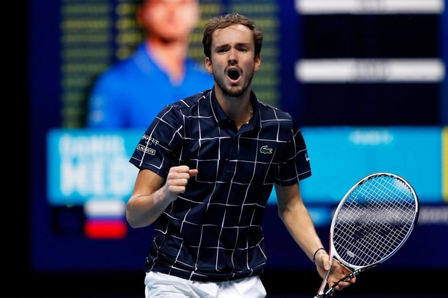

Невероятный звездопад в Париже! А Даниил Медведев одержал драматичную победу

На французском «Мастерсе» половина сеяных игроков не дошла до 3-го круга. Что происходит?
Неожиданно начался последний в сезоне турнир серии «Мастерс». В Париже зрители увидели невероятный звездопад. Даниил Медведев тоже заставил понервничать своих болельщиков, но всё же одержал драматичную победу.
На 50% больше, чем у Даниила Медведева. На «Мастерсе» в Париже подняли призовые чемпиону
«Мастерс» в Париже – последнее крупное соревнование для большинства теннисистов в году. Но, несмотря на усталость от длительного сезона и многочисленных травм, в столице Франции собрались практически все сильнейшие. Не играют лишь Рафаэль Надаль и Доминик Тим, досрочно завершившие сезон, а также Маттео Берреттини и Денис Шаповалов, решившие сделать паузу. Но, как оказалось, многим сеяным не хватило сил даже на один-два матча. Так уже в первом круге проиграли Аслан Карацев (13) и Роберто Баутиста-Агут (14). Во втором раунде сошли с дистанции Феликс Оже-Альяссим (9), Пабло Карреньо-Буста (12), Андрей Рублёв (5), Янник Синнер (8), Стефанос Циципас (3) и Диего Шварцман (11). В итоге половина сеяных не дошла даже до 3-го круга. Это просто звездопад какой-то!
ATP Masters 1000. Париж – 2021. Сетка
К вечеру среды, когда на свой первый матч собирался выходить прошлогодний чемпион Даниил Медведев, других россиян уже в сетке не было – ни в одиночном разряде, ни в парном. Для Медведева этот турнир крайне важен не только потому, что он защищает титул, но ещё и из-за того, что борется за первые места в рейтинге по итогам сезона. Если россиянин снова выиграет турнир в Париже, то у него останутся шансы обойти Джоковича в Чемпионской гонке, а если неудачно выступит, то может потерять второе место, на которое претендует Александр Зверев.
Как Медведеву не свалиться со 2-го места в рейтинге по итогам Парижа? Объясняем подробно
На турнир в столицу Франции Медведев приехал после двухнедельной турнирной паузы. Россиянин не выходил на корт в официальных матчах с середины октября – с того самого обидного поражения от Григора Димитрова в Индиан-Уэллсе. За это время россиянин побывал в Москве, потренировался в Академии Патрика Муратоглу с Новаком Джоковичем, где сумел выиграть у первой ракетки мира тренировочный сет – 7:6 (7:3).
Ну и Крендель! Медведев снова победил Джоковича через полтора месяца после финала US Open
Перед началом «Мастерса» в Париже Медведев рассказал журналистам подробности тренировки с Джоковичем: «С тех пор как я вошёл в первую десятку мирового рейтинга, не играл с ним на тренировках. Не знал, чего ожидать. Не знал, много он тренировался до этого или нет. Ожидал, что это будет хорошая тренировка, и всё сложилось замечательно. Играли два часа, провели один сет, и это было здорово. Затем пообщались 15-20 минут. Мне нравится с ним беседовать. Думаю, могу сказать, что он мой друг. Редко бывает, что номер один и номер два в рейтинге тренируются вместе».
«В Америке на меня показывают пальцем». Медведев объяснил, почему любит приезжать в Москву
Как высоко сеяный Даниил пропускал 1-й круг, а во втором ему по результатам жеребьёвки достался белорус Илья Ивашко, обыгравший испанца Альберта Рамоса. Несмотря на разницу в рейтинге (Илья сейчас 46-я ракетка мира, а Даниил – 2-я), белорус для Медведева непростой соперник. На профессиональном уровне соперники встречались лишь однажды – в квалификационном матче Кубка Дэвиса – 2018 победу праздновал Илья. Для Ивашко нынешний сезон – лучший в карьере. Он добился немало хороших результатов, в том числе и выиграл свой первый титул – в Уинстон-Сейлеме.
Не дожал Надаля, зато выбил Зверева. Белорус Ивашко — главная сенсация турнира в Мюнхене
Даниил Медведев с ходу взялся за дело и повёл с двумя брейками – 5:1. После этого он начал подавать на партию, получил три сетбола, и в этот момент произошло что-то невероятное. Это был эффект дежавю. Ситуация стала похожей на то, что произошло в поединке с Димитровым в Индиан-Уэллсе. Тогда Медведев вёл во втором сете 4:1 с двумя брейками, а потом проиграл матч, причём отдал сопернику 8 геймов подряд. Вот и сейчас Ивашко включил обороты и начал отыгрывать гейм за геймом. Россиянин дважды не подал на сет, счёт стал 5:5. И только после этого Медведев сделал брейк, а потом с третьей попытки подал на партию – 7:5. Во втором сете Даниил успокоился, быстро сделал брейк, держал ситуацию под контролем. Осечка случилась, когда он подавал на матч. Россиянин допустил две двойные ошибки на матчболах, но всё же добился такой драматичной победы – 7:5, 6:4.